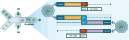
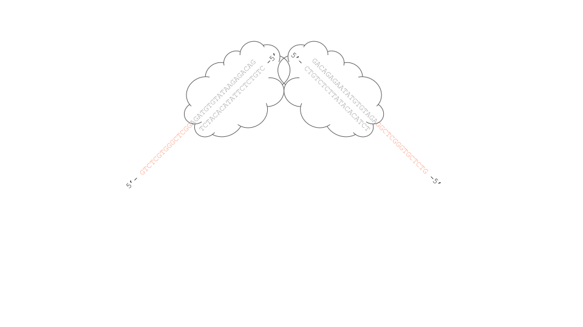

Bio-Rad Single-Cell ddSEQ 3' RNA-Seq is a droplet based assay and uses the ddSEQ Single-Cell Isolator, the same instrument as discontinued SureCell 3' WTA for ddSEQ, but it's an entirely new assay. It leverages the overloading of beads similar to Bio-Rad ddSEQ Single-Cell ATAC-Seq to ensure that transcriptomic information from encapsulated cells is captured within the droplet to maximize cell utilization. Deconvolution Oligo (DO) chemistry allows for the connection of all beads within a given droplet. During library preparation, two types of libraries are generated, (1) cDNA libraries which contain information from each cell mRNA and (2) Deconvolution Oligo (DO) libraries which are formed from the dimerisation of DOs within the same droplet. Both types of libraries are generated simultaneously during droplet formation and separated via magnetic bead-based size selection during the library preparation process. The final ddSEQ 3' RNA-Seq libraries (cDNA and DO) are dual-indexed and sequenced using paired-end sequencing. Secondary data analysis: alignment, bead merging, and cell calling are performed using the open-source Omnition Analysis Software.
The following steps are based on the information from the the ddSEQ 3' scRNA-Seq User Guide, version 1.0, DIR No. 10000167449, Ver B. You can download the PDF from this link. To make things clear at the beginning, I'm pasting Figures 4 and 5 from the user guide to show how the Deconvolution Oligos (DOs) work in principle. There are two types (actually three different sequences) of oligos on the surface of a particular bead, like this:
On each bead, the oligos are: 1) Poly(T) oligos to capture mRNA; 2) Deconvolution Oligo A and 3) Deconvolution Oligo B. DOs A and B are reverse complementary to each other at their 3' ends, so that they will form dimer to connect beads within the same droplet, like this:

Every oligo on a particular bead has the same bead barcode to identify the bead, and a UMI to differentiate oligos. The DO-A and DO-B will almost be guaranteed to form dimer. Note that DO-A and DO-B from the same bead can form dimers, and DO-A and DO-B from different beads can form dimers as well. If multiple beads are captured inside a single droplet, it is almost guaranteed that dimers from any two beads inside the same droplet will form dimers. It is rare and negligible that a single bead does not form dimers with other beads. After sequencing, we can see which bead barcodes are connected, meaning they are from the same droplet.
For one particular bead, there are three oligos attached. They only differ at the last 21 - 27 bp:
*Bead-TruSeq Read1-UMI-CBC-poly(T): |--5'- CCCTACACGACGCTCTTCCGATCT [8-bp UMI] [7-bp barcode1] [0-4 bp PB]TATGCATGAC [7-bp barcode2] CAGTCAGTCA [7-bp barcode3] AACGCAGTCAGA TTTTTTTTTTTTTTTTTTTTTTTTTTT -3' *Bead-TruSeq Read1-UMI-CBC-DO-A: |--5'-CCCTACACGACGCTCTTCCGATCT [8-bp UMI] [7-bp barcode1] [0-4 bp PB]TATGCATGAC [7-bp barcode2] CAGTCAGTCA [7-bp barcode3] AACGCAGTCAGA GAACGATACCATAATCTTGGC -3' *Bead-TruSeq Read1-UMI-CBC-DO-B: |--5'-CCCTACACGACGCTCTTCCGATCT [8-bp UMI] [7-bp barcode1] [0-4 bp PB]TATGCATGAC [7-bp barcode2] CAGTCAGTCA [7-bp barcode3] AACGCAGTCAGA GAGCCAAGATTATGGTATCGT -3'
Nextera Tn5 binding site (19-bp Mosaic End (ME)): 5'-
Nextera N7xx primer entry point (s7): 5'-
ddSEQ Single-Cell 3' RNA-Seq Dual Index Kit (Cat. no. 12020461) - cDNA Index Plate:
Forward primer (P5 + TruSeq Read 1): 5'- AATGATACGGCGACCACCGAGATCTACAC [8-bp i5 sample index]ACACTCTTTCCCTACACGACGCTCTTCCGATCT -3' Reverse primer (P7 + Nextera Read 2): 5'-CAAGCAGAAGACGGCATACGAGAT [8-bp i7 sample index]GTCTCGTGGGCTCGG -3'
ddSEQ Single-Cell 3' RNA-Seq Dual Index Kit (Cat. no. 12020461) - DO Index Plate:
Forward primer (P5 + TruSeq Read 1): 5'- AATGATACGGCGACCACCGAGATCTACAC [8-bp i5 sample index]ACACTCTTTCCCTACACGACGCTCTTCCGATCT -3' Reverse primer (P7 + TruSeq Read 2): 5'-CAAGCAGAAGACGGCATACGAGAT [8-bp i7 sample index]GTGACTGGAGTTCAGACGTGTGCTCTTCCGATCT -3'
TruSeq Read 1 sequencing primer (for both mRNA and DO): 5'-
TruSeq Read 2 sequencing primer (for DO): 5'-
Nextera Read 2 sequencing primer (for mRNA): 5'-
Index 1 sequencing primer (Nextera for mRNA): 5'-
Index 1 sequencing primer (TruSeq for DO): 5'-
Index 2 sequencing primer (both mRNA and DO, TruSeq): 5'-
Illumina P5 adapter: 5'-
Illumina P7 adapter: 5'-
* The cell barcode in this protocol is based on the combination of the barcode1+barcode2+barcode3. 7-bp each, and 21-bp in total. The [0-4 bp PB] part is None/A/CG/GCC/GCGC. It is the Phase Block between barcode1 and the constant region to desync the colours of each sequencing cycle. The full oligos are generated in a split-pool manner. The full sequence details of the beads can be found from this spreadsheet.
i) mRNA: |--5'- CCCTACACGACGCTCTTCCGATCT [8-bp UMI] [7-bp barcode1] [0-4 bp PB]TATGCATGAC [7-bp barcode2] CAGTCAGTCA [7-bp barcode3] AACGCAGTCAGA (T)27---------> (A)27XXXXXXXXXXX -5' ii) DOs: (Note that dimers can be formed from DO-A and DO-B from the same bead and from different beads. They have the same structure.) |--5'-CCCTACACGACGCTCTTCCGATCT [8-bp UMI] [7-bp barcode1] [0-4 bp PB]TATGCATGAC [7-bp barcode2] CAGTCAGTCA [7-bp barcode3] AACGCAGTCAGA GAACGATACCATAATCTTGGC ---------> <---------TGCTATGGTATTAGAACCGAG AGACTGACGCAA [7-bp barcode3] ACTGACTGAC [7-bp barcode2] CAGTACGTAT[0-4 bp PB] [7-bp barcode1] [8-bp UMI] TCTAGCCTTCTCGCAGCACATCCC -5'
i) cDNA: 5'- CCCTACACGACGCTCTTCCGATCT [8-bp UMI] [7-bp barcode1] [0-4 bp PB]TATGCATGAC [7-bp barcode2] CAGTCAGTCA [7-bp barcode3] AACGCAGTCAGA (dT)XXX...XXX -3' 3'-GGGATGTGCTGCGAGAAGGCTAGA [8-bp UMI] [7-bp barcode1] [0-4 bp PB]ATACGTACTG [7-bp barcode2] GTCAGTCAGT [7-bp barcode3] TTGCGTCAGTCT (pA)XXX...XXX -5' ii) DOs: (Note that dimers can be formed from DO-A and DO-B from the same bead and from different beads. They have the same structure.) 5'-CCCTACACGACGCTCTTCCGATCT [8-bp UMI] [7-bp barcode1] [0-4 bp PB]TATGCATGAC [7-bp barcode2] CAGTCAGTCA [7-bp barcode3] AACGCAGTCAGA GAACGATACCATAATCTTGGCTC TCTGACTGCGTT [7-bp barcode3] TGACTGACTG [7-bp barcode2] GTCATGCATA[0-4 bp PB] [7-bp barcode1] [8-bp UMI] AGATCGGAAGAGCGTCGTGTAGGG -3' 3'-GGGATGTGCTGCGAGAAGGCTAGA [8-bp UMI] [7-bp barcode1] [0-4 bp PB]ATACGTACTG [7-bp barcode2] GTCAGTCAGT [7-bp barcode3] TTGCGTCAGTCT CTTGCTATGGTATTAGAACCGAG AGACTGACGCAA [7-bp barcode3] ACTGACTGAC [7-bp barcode2] CAGTACGTAT[0-4 bp PB] [7-bp barcode1] [8-bp UMI] TCTAGCCTTCTCGCAGCACATCCC -5'

Product 1 (middle of cDNA, s7 at both ends, not amplifiable due to semi-suppressiev PCR): 5'- GTCTCGTGGGCTCGG AGATGTGTATAAGAGACAG XXXXXXXXXXXXXXXXXXXXXXXXX...XXXXXXXXXXXXXXXX----->CTGTCTCTTATACACATCT -3' 3'-TCTACACATATTCTCTGTC <-----XXXXXXXXXXXXXXXX...XXXXXXXXXXXXXXXXXXXXXXXXXGACAGAGAATATGTGTAGA GGCTCGGGTGCTCTG -5' Product 2 (5' end of cDNA, not amplifiable): 5'-GTCTCGTGGGCTCGG AGATGTGTATAAGAGACAG XXXXXXXXXXXX...XXXXXXXXXXXXXXXXXXTCTACACATATTCTCTGTC <-----XXX...XXXXXXXXXXXXXXXXXX -5' Product 3 (3' end of cDNA, this is the only amplifiable product): 5'-CCCTACACGACGCTCTTCCGATCT [8-bp UMI] [7-bp barcode1] [0-4 bp PB]TATGCATGAC [7-bp barcode2] CAGTCAGTCA [7-bp barcode3] AACGCAGTCAGA (dT)XXX...XXX----->CTGTCTCTTATACACATCT -3' 3'-GGGATGTGCTGCGAGAAGGCTAGA [8-bp UMI] [7-bp barcode1] [0-4 bp PB]ATACGTACTG [7-bp barcode2] GTCAGTCAGT [7-bp barcode3] TTGCGTCAGTCT (pA)XXX...XXXXXXXXXXXXGACAGAGAATATGTGTAGA GGCTCGGGTGCTCTG -5'
5'- AATGATACGGCGACCACCGAGATCTACAC [8-bp i5]ACACTCTTTCCCTACACGACGCTCTTCCGATCT --------> 5'-CCCTACACGACGCTCTTCCGATCT [8-bp UMI] [7-bp barcode1] [0-4 bp PB]TATGCATGAC [7-bp barcode2] CAGTCAGTCA [7-bp barcode3] AACGCAGTCAGA (dT)XXX...XXXXXXXXXXXXCTGTCTCTTATACACATCT CCGAGCCCACGAGAC -3' 3'-GGGATGTGCTGCGAGAAGGCTAGA [8-bp UMI] [7-bp barcode1] [0-4 bp PB]ATACGTACTG [7-bp barcode2] GTCAGTCAGT [7-bp barcode3] TTGCGTCAGTCT (pA)XXX...XXXXXXXXXXXXGACAGAGAATATGTGTAGA GGCTCGGGTGCTCTG -5' <----------GGCTCGGGTGCTCTG [8-bp i7]TAGAGCATACGGCAGAAGACGAAC -5'
Product 1 (Illumina P5 at both ends, not sequence-able): 5'- AATGATACGGCGACCACCGAGATCTACAC [8-bp i5]ACACTCTTTCCCTACACGACGCTCTTCCGATCT --------> 5'-CCCTACACGACGCTCTTCCGATCT [8-bp UMI] [7-bp barcode1] [0-4 bp PB]TATGCATGAC [7-bp barcode2] CAGTCAGTCA [7-bp barcode3] AACGCAGTCAGA GAACGATACCATAATCTTGGCTC TCTGACTGCGTT [7-bp barcode3] TGACTGACTG [7-bp barcode2] GTCATGCATA[0-4 bp PB] [7-bp barcode1] [8-bp UMI] AGATCGGAAGAGCGTCGTGTAGGG -3' 3'-GGGATGTGCTGCGAGAAGGCTAGA [8-bp UMI] [7-bp barcode1] [0-4 bp PB]ATACGTACTG [7-bp barcode2] GTCAGTCAGT [7-bp barcode3] TTGCGTCAGTCT CTTGCTATGGTATTAGAACCGAG AGACTGACGCAA [7-bp barcode3] ACTGACTGAC [7-bp barcode2] CAGTACGTAT[0-4 bp PB] [7-bp barcode1] [8-bp UMI] TCTAGCCTTCTCGCAGCACATCCC -5' <----------TCTAGCCTTCTCGCAGCACATCCCTTTCTCACA [8-bp i5]CACATCTAGAGCCACCAGCGGCATAGTAA -5' Product 2 (Illumina P7 at both ends, very rare and not sequence-able): 5'-CAAGCAGAAGACGGCATACGAGAT [8-bp i7]GTGACTGGAGTTCAGACGTGT GCTCTTCCGATCT ---------> 5'-CCCTACACGACGCTCTTCCGATCT [8-bp UMI] [7-bp barcode1] [0-4 bp PB]TATGCATGAC [7-bp barcode2] CAGTCAGTCA [7-bp barcode3] AACGCAGTCAGA GAACGATACCATAATCTTGGCTC TCTGACTGCGTT [7-bp barcode3] TGACTGACTG [7-bp barcode2] GTCATGCATA[0-4 bp PB] [7-bp barcode1] [8-bp UMI] AGATCGGAAGAGCGTCGTGTAGGG -3' 3'-GGGATGTGCTGCGAGAAGGCTAGA [8-bp UMI] [7-bp barcode1] [0-4 bp PB]ATACGTACTG [7-bp barcode2] GTCAGTCAGT [7-bp barcode3] TTGCGTCAGTCT CTTGCTATGGTATTAGAACCGAG AGACTGACGCAA [7-bp barcode3] ACTGACTGAC [7-bp barcode2] CAGTACGTAT[0-4 bp PB] [7-bp barcode1] [8-bp UMI] TCTAGCCTTCTCGCAGCACATCCC -5' <----------TCTAGCCTTCTCG TGTGCAGACTTGAGGTCAGTG [8-bp i7]TAGAGCATACGGCAGAAGACGAAC -5' Product 3 (Illumina P5 at one end, P7 at the other, the only sequence-able product): 5'-AATGATACGGCGACCACCGAGATCTACAC [8-bp i5]ACACTCTTTCCCTACACGACGCTCTTCCGATCT --------> 5'-CCCTACACGACGCTCTTCCGATCT [8-bp UMI] [7-bp barcode1] [0-4 bp PB]TATGCATGAC [7-bp barcode2] CAGTCAGTCA [7-bp barcode3] AACGCAGTCAGA GAACGATACCATAATCTTGGCTC TCTGACTGCGTT [7-bp barcode3] TGACTGACTG [7-bp barcode2] GTCATGCATA[0-4 bp PB] [7-bp barcode1] [8-bp UMI] AGATCGGAAGAGCGTCGTGTAGGG -3' 3'-GGGATGTGCTGCGAGAAGGCTAGA [8-bp UMI] [7-bp barcode1] [0-4 bp PB]ATACGTACTG [7-bp barcode2] GTCAGTCAGT [7-bp barcode3] TTGCGTCAGTCT CTTGCTATGGTATTAGAACCGAG AGACTGACGCAA [7-bp barcode3] ACTGACTGAC [7-bp barcode2] CAGTACGTAT[0-4 bp PB] [7-bp barcode1] [8-bp UMI] TCTAGCCTTCTCGCAGCACATCCC -5' <----------TCTAGCCTTCTCG TGTGCAGACTTGAGGTCAGTG [8-bp i7]TAGAGCATACGGCAGAAGACGAAC -5'
cDNA library: 5'- AATGATACGGCGACCACCGAGATCTACAC NNNNNNNNACACTCTTTCCCTACACGACGCTCTTCCGATCT NNNNNNNN NNNNNNN N.NTATGCATGAC NNNNNNN CAGTCAGTCA NNNNNNN AACGCAGTCAGA (dT)XXX...XXXCTGTCTCTTATACACATCT CCGAGCCCACGAGAC NNNNNNNNATCTCGTATGCCGTCTTCTGCTTG TTACTATGCCGCTGGTGGCTCTAGATGTG NNNNNNNNTGTGAGAAAGGGATGTGCTGCGAGAAGGCTAGA NNNNNNNN NNNNNNN N.NATACGTACTG NNNNNNN GTCAGTCAGT NNNNNNN TTGCGTCAGTCT (pA)XXX...XXXGACAGAGAATATGTGTAGA GGCTCGGGTGCTCTG NNNNNNNNTAGAGCATACGGCAGAAGACGAAC -5'Illumina P5 8-bp i5TruSeq Read 1 UMI Cell PB+linker1 Cell linker2 Cell linker3 cDNAME s7 8-bp i7Illumina P7 sample indexbarcode1 barcode2 barcode3 sample index DO library: 5'-AATGATACGGCGACCACCGAGATCTACAC NNNNNNNNACACTCTTTCCCTACACGACGCTCTTCCGATCT NNNNNNNN NNNNNNN N.NTATGCATGAC NNNNNNN CAGTCAGTCA NNNNNNN AACGCAGTCAGA GAACGATACCATAATCTTGGCTC TCTGACTGCGTT NNNNNNN TGACTGACTG NNNNNNN GTCATGCATAN.N NNNNNNN NNNNNNNN AGATCGGAAGAGCACACGTCTGAACTCCAGTCAC NNNNNNNNATCTCGTATGCCGTCTTCTGCTTG TTACTATGCCGCTGGTGGCTCTAGATGTG NNNNNNNNTGTGAGAAAGGGATGTGCTGCGAGAAGGCTAGA NNNNNNNN NNNNNNN N.NATACGTACTG NNNNNNN GTCAGTCAGT NNNNNNN TTGCGTCAGTCT CTTGCTATGGTATTAGAACCGAG AGACTGACGCAA NNNNNNN ACTGACTGAC NNNNNNN CAGTACGTATN.N NNNNNNN NNNNNNNN TCTAGCCTTCTCGTGTGCAGACTTGAGGTCAGTG NNNNNNNNTAGAGCATACGGCAGAAGACGAAC -5'Illumina P5 8-bp i5TruSeq Read 1 UMI Cell PB+linker1 Cell linker2 Cell linker3 DO dimer linker3 Cell linker2 Cell PB+linker1 Cell UMI TruSeq Read 2 8-bp i7Illumina P7 sample indexbarcode1 barcode2 barcode3 barcode3 barcode2 barcode1 sample index
cDNA library: 5'- ACACTCTTTCCCTACACGACGCTCTTCCGATCT ----------------------------------------------------> 3'-TTACTATGCCGCTGGTGGCTCTAGATGTG NNNNNNNNTGTGAGAAAGGGATGTGCTGCGAGAAGGCTAGA NNNNNNNN NNNNNNN N.NATACGTACTG NNNNNNN GTCAGTCAGT NNNNNNN TTGCGTCAGTCT (pA)XXX...XXXGACAGAGAATATGTGTAGA GGCTCGGGTGCTCTG NNNNNNNNTAGAGCATACGGCAGAAGACGAAC -5' DO library: 5'-ACACTCTTTCCCTACACGACGCTCTTCCGATCT ----------------------------------------------------> 3'-TTACTATGCCGCTGGTGGCTCTAGATGTG NNNNNNNNTGTGAGAAAGGGATGTGCTGCGAGAAGGCTAGA NNNNNNNN NNNNNNN N.NATACGTACTG NNNNNNN GTCAGTCAGT NNNNNNN TTGCGTCAGTCT CTTGCTATGGTATTAGAACCGAG AGACTGACGCAA NNNNNNN ACTGACTGAC NNNNNNN CAGTACGTATN.N NNNNNNN NNNNNNNN TCTAGCCTTCTCGTGTGCAGACTTGAGGTCAGTG NNNNNNNNTAGAGCATACGGCAGAAGACGAAC -5'
cDNA library: 5'- CTGTCTCTTATACACATCT CCGAGCCCACGAGAC -------> 3'-TTACTATGCCGCTGGTGGCTCTAGATGTG NNNNNNNNTGTGAGAAAGGGATGTGCTGCGAGAAGGCTAGA NNNNNNNN NNNNNNN N.NATACGTACTG NNNNNNN GTCAGTCAGT NNNNNNN TTGCGTCAGTCT (pA)XXX...XXXGACAGAGAATATGTGTAGA GGCTCGGGTGCTCTG NNNNNNNNTAGAGCATACGGCAGAAGACGAAC -5' DO library: 5'-GATCGGAAGAGCACACGTCTGAACTCCAGTCAC -------> 3'-TTACTATGCCGCTGGTGGCTCTAGATGTG NNNNNNNNTGTGAGAAAGGGATGTGCTGCGAGAAGGCTAGA NNNNNNNN NNNNNNN N.NATACGTACTG NNNNNNN GTCAGTCAGT NNNNNNN TTGCGTCAGTCT CTTGCTATGGTATTAGAACCGAG AGACTGACGCAA NNNNNNN ACTGACTGAC NNNNNNN CAGTACGTATN.N NNNNNNN NNNNNNNN TCTAGCCTTCTCGTGTGCAGACTTGAGGTCAGTG NNNNNNNNTAGAGCATACGGCAGAAGACGAAC -5'
cDNA library: 5'- AATGATACGGCGACCACCGAGATCTACAC NNNNNNNNACACTCTTTCCCTACACGACGCTCTTCCGATCT NNNNNNNN NNNNNNN N.NTATGCATGAC NNNNNNN CAGTCAGTCA NNNNNNN AACGCAGTCAGA (dT)XXX...XXXCTGTCTCTTATACACATCT CCGAGCCCACGAGAC NNNNNNNNATCTCGTATGCCGTCTTCTGCTTG <-------TGTGAGAAAGGGATGTGCTGCGAGAAGGCTAGA -5' DO library: 5'-AATGATACGGCGACCACCGAGATCTACAC NNNNNNNNACACTCTTTCCCTACACGACGCTCTTCCGATCT NNNNNNNN NNNNNNN N.NTATGCATGAC NNNNNNN CAGTCAGTCA NNNNNNN AACGCAGTCAGA GAACGATACCATAATCTTGGCTC TCTGACTGCGTT NNNNNNN TGACTGACTG NNNNNNN GTCATGCATAN.N NNNNNNN NNNNNNNN AGATCGGAAGAGCACACGTCTGAACTCCAGTCAC NNNNNNNNATCTCGTATGCCGTCTTCTGCTTG <-------TGTGAGAAAGGGATGTGCTGCGAGAAGGCTAGA -5'
cDNA library: 5'- AATGATACGGCGACCACCGAGATCTACAC NNNNNNNNACACTCTTTCCCTACACGACGCTCTTCCGATCT NNNNNNNN NNNNNNN N.NTATGCATGAC NNNNNNN CAGTCAGTCA NNNNNNN AACGCAGTCAGA (dT)XXX...XXXCTGTCTCTTATACACATCT CCGAGCCCACGAGAC NNNNNNNNATCTCGTATGCCGTCTTCTGCTTG <-------GACAGAGAATATGTGTAGA GGCTCGGGTGCTCTG -5' DO library: 5'-AATGATACGGCGACCACCGAGATCTACAC NNNNNNNNACACTCTTTCCCTACACGACGCTCTTCCGATCT NNNNNNNN NNNNNNN N.NTATGCATGAC NNNNNNN CAGTCAGTCA NNNNNNN AACGCAGTCAGA GAACGATACCATAATCTTGGCTC TCTGACTGCGTT NNNNNNN TGACTGACTG NNNNNNN GTCATGCATAN.N NNNNNNN NNNNNNNN AGATCGGAAGAGCACACGTCTGAACTCCAGTCAC NNNNNNNNATCTCGTATGCCGTCTTCTGCTTG <--------------------------------------------------------------------TCTAGCCTTCTCGTGTGCAGACTTGAGGTCAGTG -5'